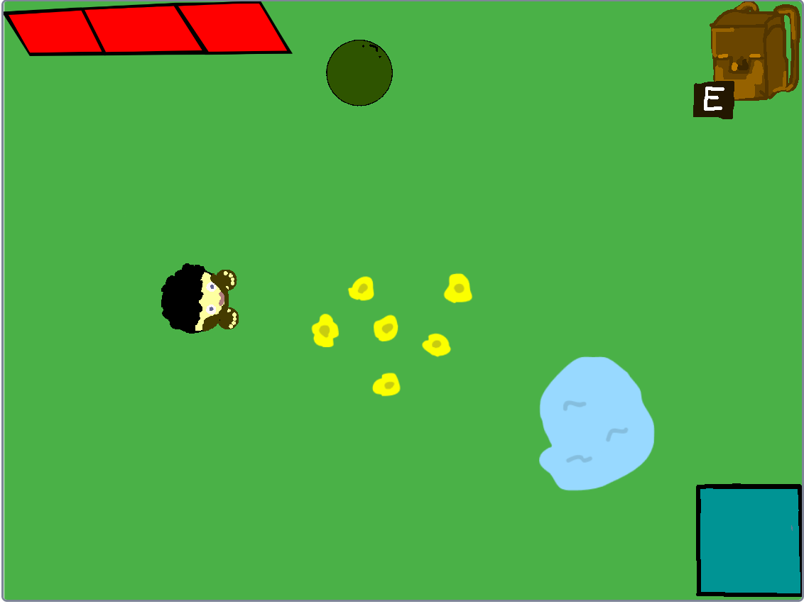
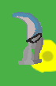

A játék egy mindenki számára könnyen értelmezhető játékkezdő menü rendszert használ. Csak nyomd meg a B betűt és már kezdhetsz is játszani!
Izgalmas játéktérkép és funkciók
A játék kezdésekor a játékos először egy egyszerű kis mezőn kezd. Innen kell továbbhaladnia.
Több kérkép is található a játékban, fokozatosan kell előrehaladnia a játékosnak.

NEW FEATURE!

Izgalmas fegyverzet
A játékosnak lehetősége van több fegyvert is szerezni a játék során. Először egy kést kap.